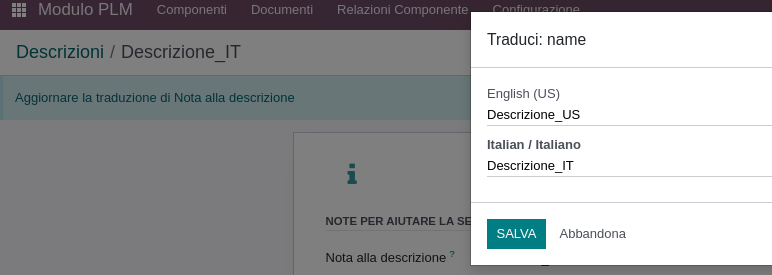
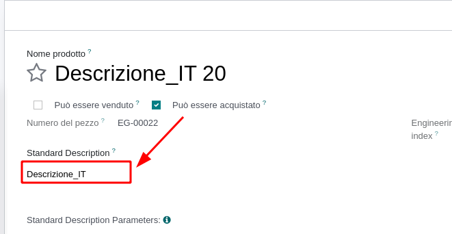
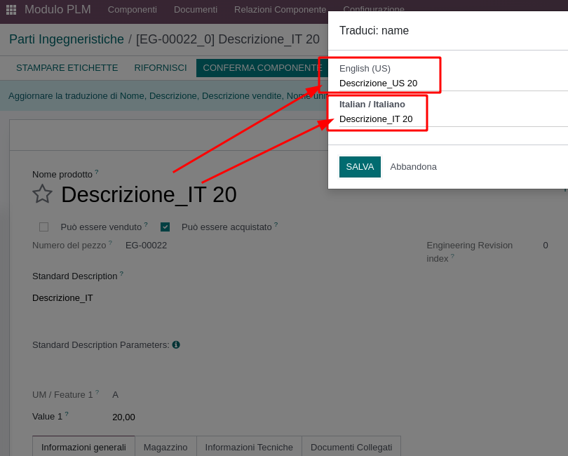

<section class="oe_container oe_dark">
    <div class="oe_row oe_spaced">
        <h2 class="oe_slogan">PLM Product Description Language Helper</h2>
        <div class="oe_span12">
            <p class="oe_mt32">
				This module allows you to automatically translate the product name descriprion in all the language installed on odoo<br></br>
                It's very useful when you use the standard descriprion of odooplm and you need to take up-todate the name  translation of your product
            </p>
            <p class="oe_mt32">
            <b>How it works:</b>
            	<br></br>
            	<ul>
                    <li>
                       <p class="oe_mt32">Translate your standard description </p>
                       
                    </li>
					<li>
					   <p class="oe_mt32">Change the standard description field on product</p>
					   
					</li>
                    <li>
                       <p class="oe_mt32">Save the product. Check the translation</p>
                       
                    </li>
            	</ul>
            </p>
         </div>
    </div>
</section>